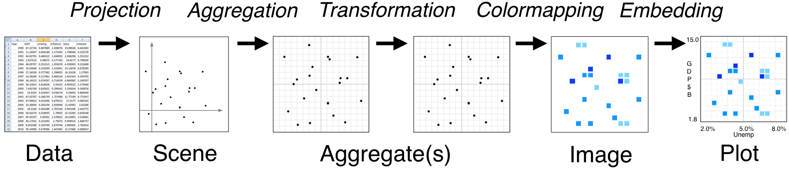

Extending#
Datashader is designed as a series of stages that can each be configured (as described in preceding pages), extended, or replaced:

This document contains brief notes on how to extend or replace each of these stages, following the organization of the Pipeline section of the documentation. For the full details, you can study the Datashader source code.
Data#
Right now, Datashader accepts Pandas or Dask dataframes for Points, Lines, and Graphs, and xarray arrays for Raster data. The Lines and Graph support makes certain assumptions about the specific organizations of those data structures, such as that Lines will be specified as a series of points on dataframe rows, with NaNs separating subsequent lines. There are some utilities in ds.utils() to convert other data formats into these formats, and it should be simple to write additional conversion utilities, which can be submitted as PRs if you think they are likely to be useful to others.
Datashader’s data access is controlled by a multi-dispatch mechanism, and so you can add direct support for other data types without modifying the datashader code by registering the appropriate machinery. See ds.utils.Dispatcher and the examples in pandas.py and dask.py. Doing so is of course more involved than converting your data, but if you need to work natively with data in other formats it may be worth doing. Again, if the resulting support seems useful to others, we would be happy to consider adding it to datashader proper; just make a PR.
Projection#
Datashader provides Point, Line, and Raster glyphs, specified at the canvas/scene level and primarily implemented in glyphs.py. You can create your own mappings beyond these, such as shading a point onto a set of bins according to some kernel function or some positional uncertainty value, but doing so is much more difficult than customizing later stages in the pipeline, and is beyond the scope of this documentation.
Aggregation#
It should be reasonably straightforward to implement your own reduction operators, if they can be expressed as an incremental computation. These components are highly optimized and thus the code is perhaps a bit hard to follow, but adding these should be much simpler than new glyph types.
Some reduction operators cannot be implemented incrementally. For instance, a true mathematical median operation requires knowing all of the datapoints for a given bin at the same time, which requires storing the entire dataset in memory in a different format from the original. Datashader is designed for datasets potentially much larger than can fit on any one machine, and so we have not provided a median operator that would not have that property. There are approximate median algorithms, which can work by dividing the range of possible values into bins, and we would be happy to accept a contribution of such an operator implemented efficiently.
Transformation#
Once you have an aggregate array, you can do anything you like! This array will have a fixed size regardless of your original dataset size, and so anything operating on the aggregate array need not be particularly well optimized or tuned for it to be practical for large datasets. The xarray documentation describes all the various transformations you can apply from within xarray, and of course you can always extract the data values and operate on them outside of xarray for any transformation not directly supported by xarray, then construct a suitable xarray object for use in the following stage. If there are transformations that seem particularly useful to other datashader users, we would be happy to consider including them, but generally these are very lightweight objects that you can simply create and discard as needed for your applications.
Colormapping#
The tf.shade() function accepts a how argument that can be any mathematical function, allowing arbitrary rescaling of the aggregate values before mapping them into the observable color space. Again, these objects can be very lightweight, but if you come up with one that seems useful to others, feel free to submit it for inclusion in Datashader.
Once the image is created, you can use any of the various transformation functions in ds.transfer_functions, and writing new such functions is typically trivial. As before, these functions are very lightweight, but if one is particularly useful, please submit it for consideration for the library.
Embedding#
Datashader is directly supported by HoloViews, with interactive exploration supported for its Bokeh extension, and static plots supported for its Matplotlib extension. Plotly 3.0 now includes Datashader support as well. Because Datashader simply creates arrays and RGBA images, it should be straightforward to add support for Datashader to any plotting package that can call a Python function. We would love to accept contributions of interfaces for other plotting packages, or for those packages to support rendering using Datashader directly. If you do add Datashader support, please open an issue describing what you’ve done, so that we can add your tool to our test suite for to validate our changes against as we further develop the library.